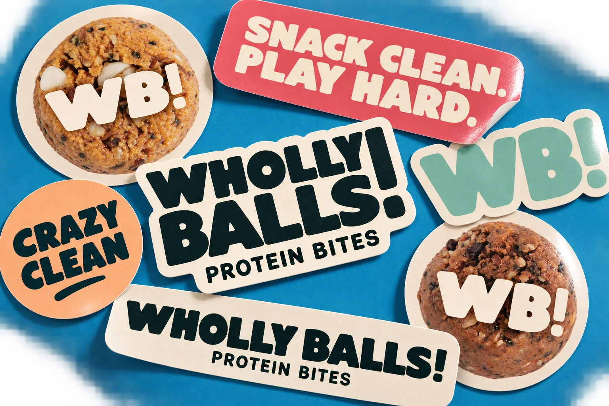
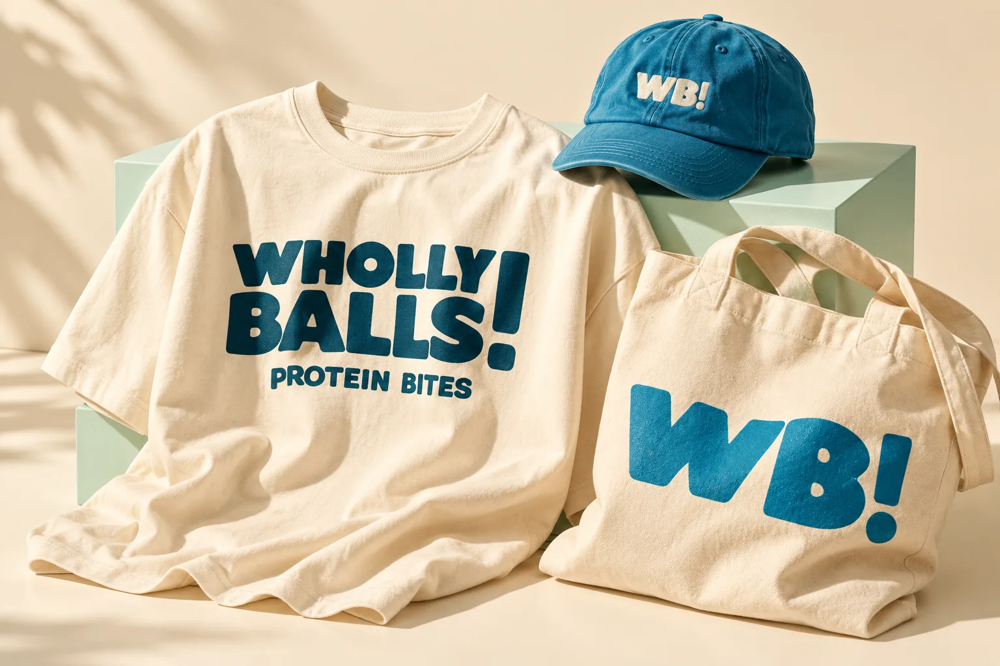
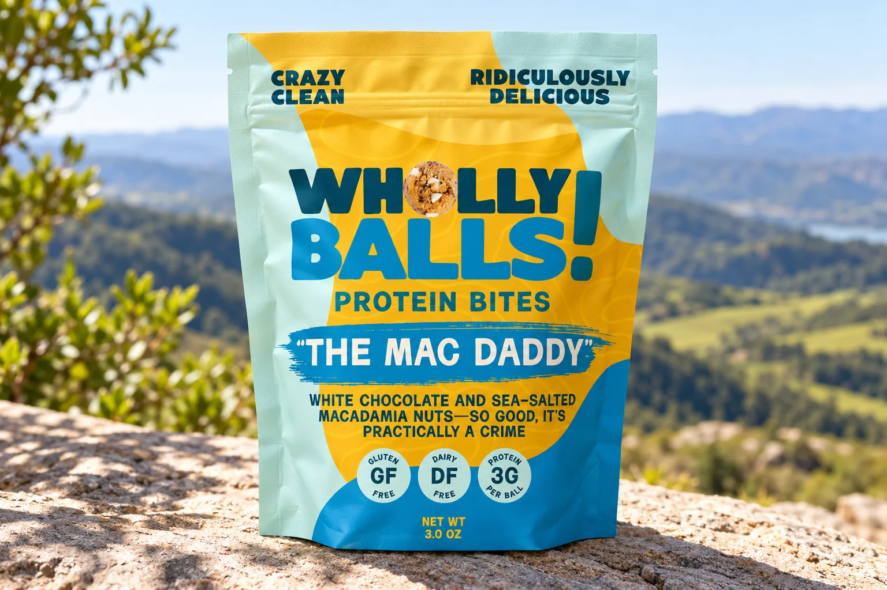
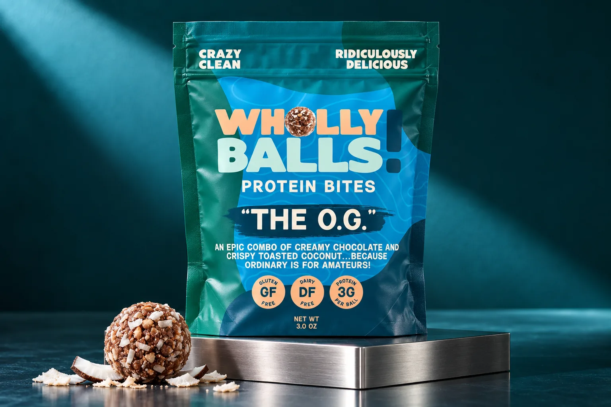
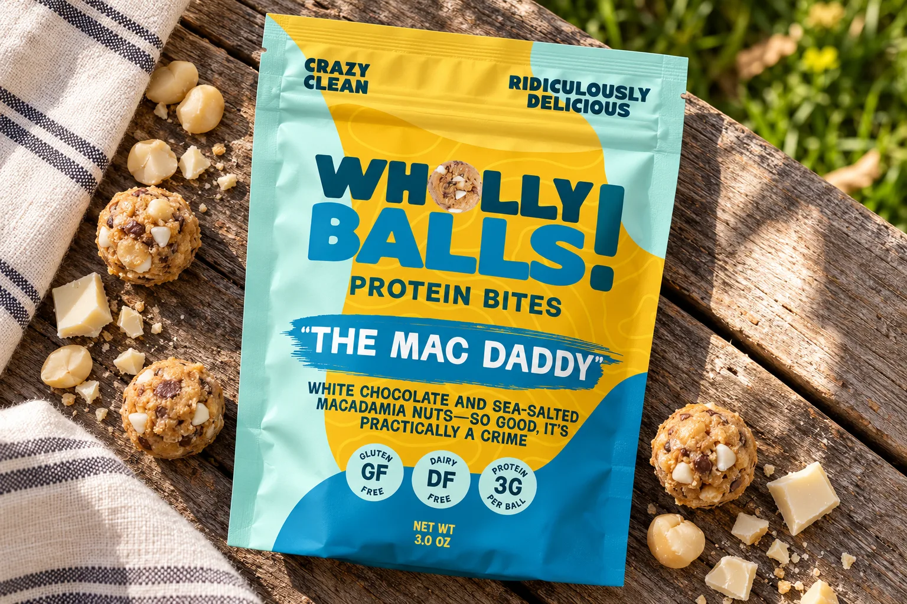
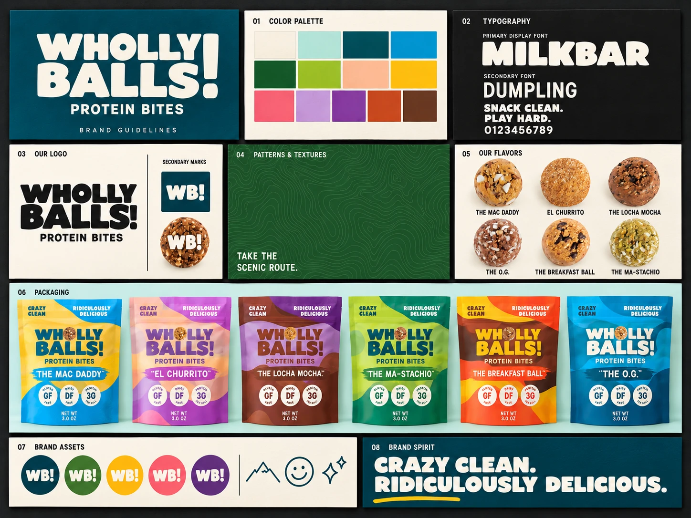
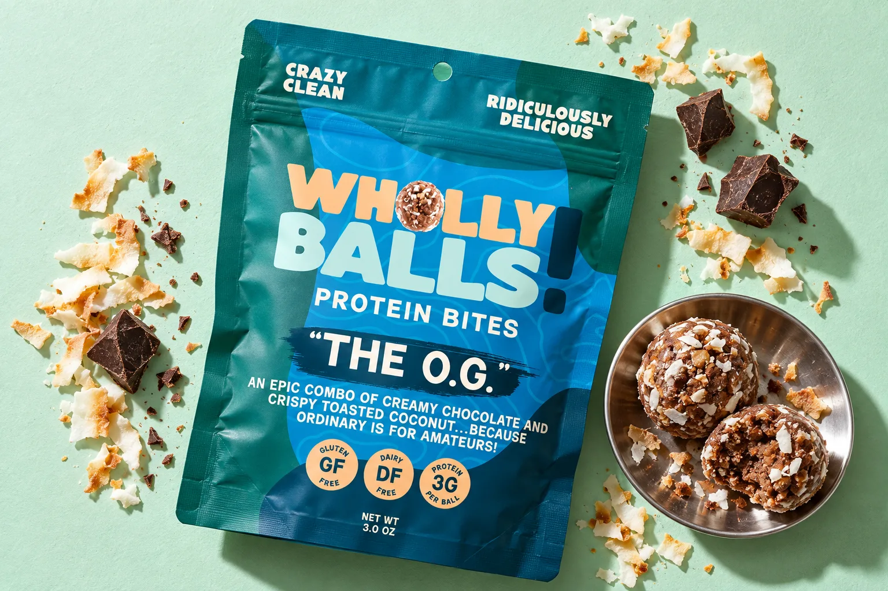
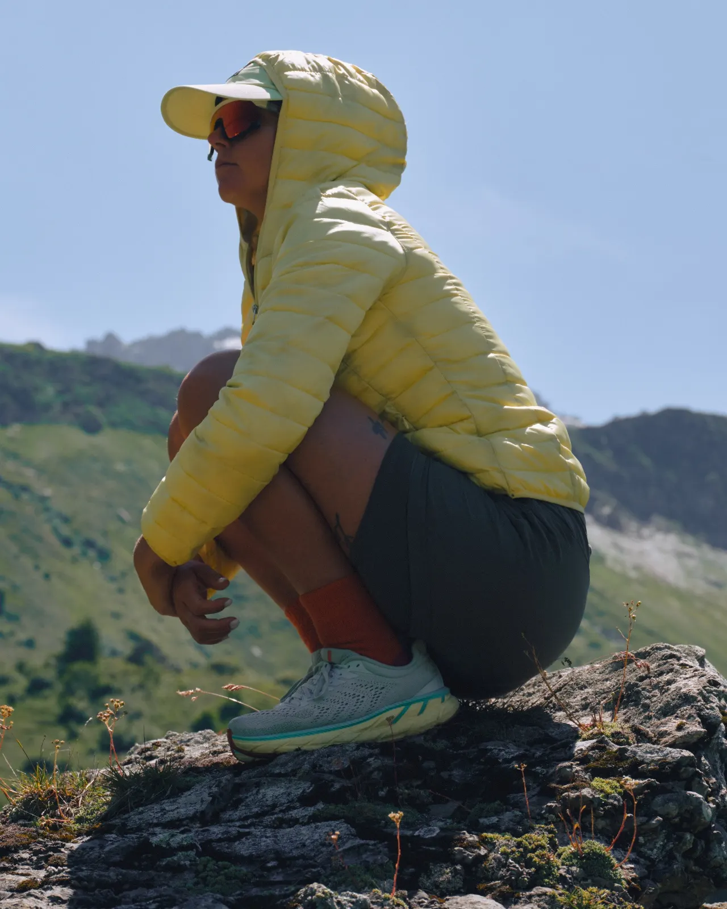
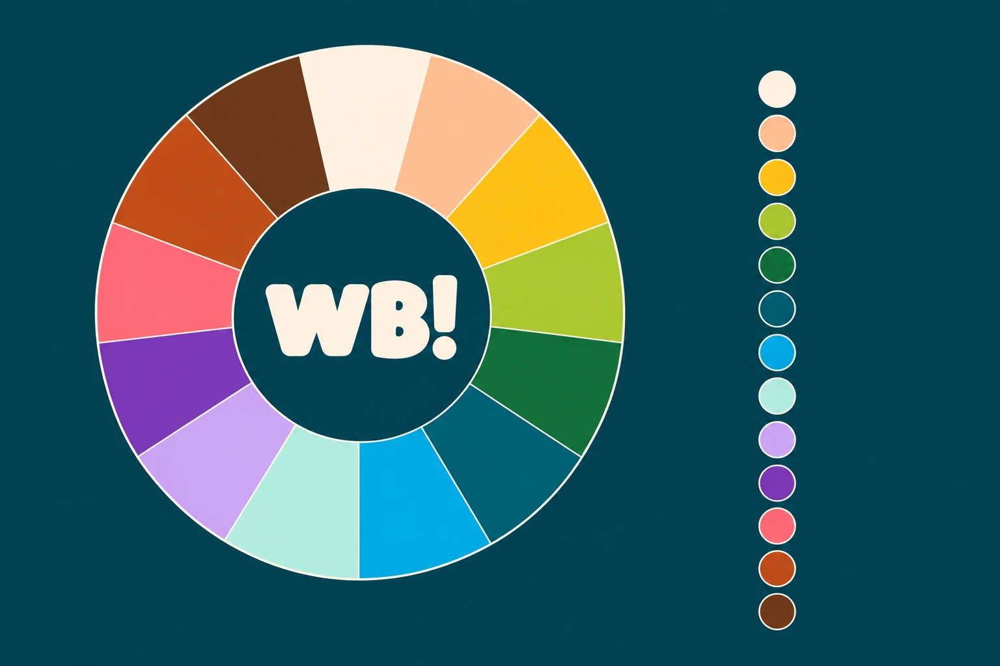
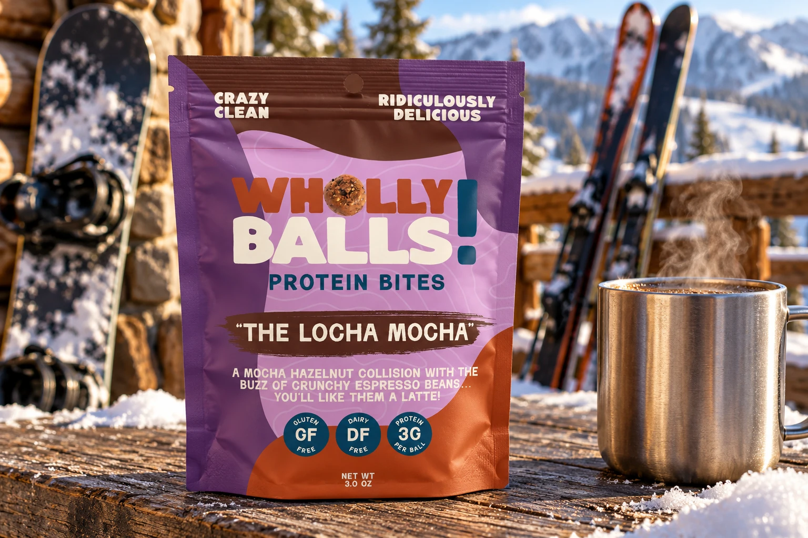

A protein bite with no interest in looking sensible.
Wholly Balls makes gluten-free, dairy-free protein bites in six flavors. I built the brand through Daymade, from the wordmark to the pouch system to the voice, and wrapped it in a guidelines book so it holds together once it leaves my hands.
Most of the protein aisle looks like a supplement shelf. I wanted this to look like a snack you'd be excited to open. Loud enough to spot from the end of the aisle, and consistent enough that the sixth flavor still reads as the same brand as the first.
A ball where
the O should be
The wordmark is set in Milkbar, a heavy, rounded display face, stacked on two lines. The O in Wholly is an actual protein bite, and the exclamation point runs the full height of both lines. The guidelines call it non-negotiable. I meant that.
For small spaces there's a WB! monogram. It ends up on stickers, caps and the side of a tote, and on top of a protein bite whenever the photo gives it room.



Six flavors,
one layout
The pouch layout never moves. The color does. Each flavor gets a lead color pulled from what's in it, so you can tell the Mac Daddy from the Ma-Stachio across the aisle before you can read either name.
The Mac Daddy
White chocolate and macadamia#F3C45B
El Churrito
Cinnamon and almond#DAA7D0
The Locha Mocha
Mocha and hazelnut#6E3680
The Ma-Stachio
Matcha and pistachio#74A549
The O.G.
Chocolate and coconut#086C79
The Breakfast Ball
Maple, peanut butter and chocolate chip#E94C14
Built to read
from the end
of the aisle
Every pouch reads in the same order. Wordmark first, then the flavor name on a painted brush stroke, then one line of copy that's allowed to be a little ridiculous. The Mac Daddy's says it's so good it's practically a crime.
Under that sit three round badges for gluten free, dairy free, and protein per ball. They answer the label-reader before the pouch gets turned over. Behind everything runs a faint topo line pattern, which turned out to be the only quiet thing on the pack.


Crazy clean.
Ridiculously
delicious.
That line sits at the top of every pouch, and it more or less wrote the rest of the voice. The brand talks the way a friend on a long hike talks. A bit cheeky, never preachy about nutrition, and willing to say "damn" when it's funnier that way.
The guidelines book pulls it all into one place: the palette, both typefaces (Milkbar for display, Dumpling for everything smaller), the topo pattern, the WB! marks and the icons, so whoever picks it up next doesn't have to guess.

Pages from the brand guidelines.
Shown where
it actually
gets eaten
None of the photography happens in a gym. The pouches turn up on a granite ledge and on a snowy railing at the ski hill next to something hot, because that's where people actually reach for them.
It's trail food and between-meetings food. The brand never tries to pass it off as a diet product, and the pictures don't either.


Take the
scenic route.

